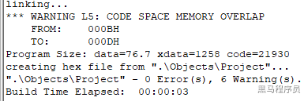
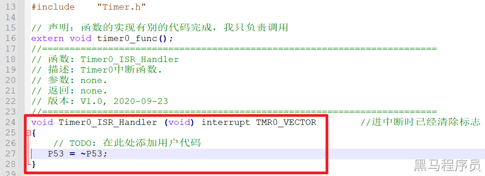
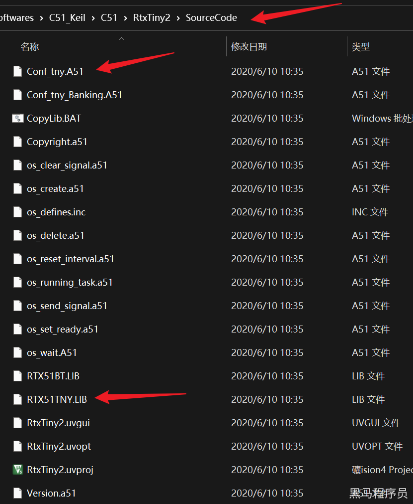
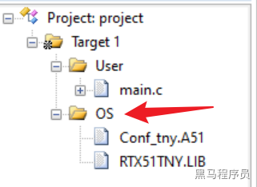
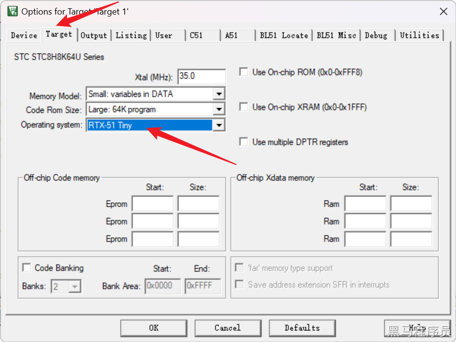
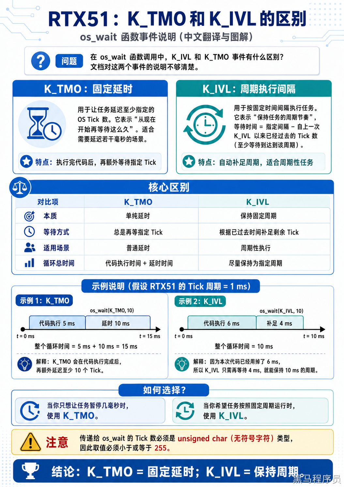

<!DOCTYPE lake>
<h2 data-lake-id="yXDTF" id="yXDTF"><span data-lake-id="u91f93834" id="u91f93834">学习目标</span></h2><ul list="u2718b964"><li data-lake-id="ud0836e98" fid="u0c960bf3" id="ud0836e98"><span data-lake-id="ubf922f22" id="ubf922f22">理解操作系统功能</span></li><li data-lake-id="ue8fddf50" fid="u0c960bf3" id="ue8fddf50"><span data-lake-id="uc11cd856" id="uc11cd856">学会使用RTX51操作系统</span></li></ul><h2 data-lake-id="hAoMe" id="hAoMe"><span data-lake-id="ubbf61ac7" id="ubbf61ac7">学习内容</span></h2><h3 data-lake-id="eHrsp" id="eHrsp"><span data-lake-id="ue08a271a" id="ue08a271a">操作系统</span></h3><h4 data-lake-id="r3aQm" id="r3aQm"><span data-lake-id="ud8ec372f" id="ud8ec372f">我们认知的操作系统</span></h4><p data-lake-id="ub4dd4ef5" id="ub4dd4ef5"></p><p data-lake-id="uc3dd2ae5" id="uc3dd2ae5"><span data-lake-id="u61acc957" id="u61acc957">我们认知的操作系统更多的是通过PC机或者手机来进行理解的，例如Window系统，Android系统。</span></p><p data-lake-id="u5ddb6a46" id="u5ddb6a46"><span data-lake-id="u55cc7fd7" id="u55cc7fd7">由于这些商业系统属于高度集成化后的产物，我们会发现操作系统这个概念很复杂、很宽泛，无法理解和去实现。</span></p><p data-lake-id="uf115b4f6" id="uf115b4f6"><span data-lake-id="u6a4d152c" id="u6a4d152c">目前大家已知的操作系统功能大致如下:</span></p><ol list="u4b656187"><li data-lake-id="u7a2b34c0" fid="u54240e8b" id="u7a2b34c0"><span data-lake-id="ue22bb4e1" id="ue22bb4e1">进程管理：管理程序的执行，包括进程的创建、终止、调度和通信等。</span></li><li data-lake-id="ufceda85e" fid="u54240e8b" id="ufceda85e"><span data-lake-id="u09559877" id="u09559877">内存管理：负责管理内存的分配和回收，保证每个程序都能获得足够的内存空间。</span></li><li data-lake-id="u7070ea14" fid="u54240e8b" id="u7070ea14"><span data-lake-id="u858ab7f4" id="u858ab7f4">文件系统管理：为应用程序提供文件的读写和管理功能，包括文件的创建、打开、关闭、删除等。</span></li><li data-lake-id="u1a521d2b" fid="u54240e8b" id="u1a521d2b"><span data-lake-id="ub3883edd" id="ub3883edd">设备管理：管理计算机系统中的各种设备，包括输入输出设备、网络设备、存储设备等。</span></li><li data-lake-id="uc20a5660" fid="u54240e8b" id="uc20a5660"><span data-lake-id="ue278bb70" id="ue278bb70">安全管理：保护系统的安全性，防止病毒、黑客等对系统进行攻击和破坏。</span></li><li data-lake-id="u044995bf" fid="u54240e8b" id="u044995bf"><span data-lake-id="uebeb3666" id="uebeb3666">用户界面：提供用户与计算机系统进行交互的方式，包括图形用户界面和命令行界面等。</span></li><li data-lake-id="u68a7df27" fid="u54240e8b" id="u68a7df27"><span data-lake-id="u0761db89" id="u0761db89">网络通信：管理计算机系统的网络通信，包括数据传输、协议处理、连接管理等。</span></li><li data-lake-id="u07326728" fid="u54240e8b" id="u07326728"><span data-lake-id="u868c77f1" id="u868c77f1">错误处理：监测和处理各种错误和异常情况，保证系统的稳定性和可靠性。</span></li></ol><p data-lake-id="u133afac0" id="u133afac0"><span data-lake-id="ue4fd5475" id="ue4fd5475">操作系统是计算机系统中的核心软件，为用户和应用程序提供各种服务和支持，使得计算机系统能够高效、稳定地运行。</span></p><p data-lake-id="ucf1dc1d4" id="ucf1dc1d4"><span data-lake-id="uc93d169f" id="uc93d169f">以上是我们认知中的商业操作系统的功能概述，每一块单独拿出来，都是一个复杂的内容，而且这些最终这些还要集合到一起去。</span></p><h4 data-lake-id="KYtKa" id="KYtKa"><span data-lake-id="u1d58289e" id="u1d58289e">最小的操作系统</span></h4><p data-lake-id="ua9960da4" id="ua9960da4"></p><p data-lake-id="u4481ad68" id="u4481ad68"><span data-lake-id="udbd5afea" id="udbd5afea">其实操作系统的复杂程度和硬件功能的集成度相关，内存、存储、CPU性能、是否有网络设备、是否有输入输出设备等等这些条件。</span></p><p data-lake-id="u7d5fd7f8" id="u7d5fd7f8"><span data-lake-id="u38618b70" id="u38618b70">由于集成度不同，通用性也就不同，但是作为一个操作系统，必然会提供以下功能：</span></p><ul list="u04e0e25e"><li data-lake-id="ubaeab055" fid="ued8a7059" id="ubaeab055"><span data-lake-id="u120ebc2f" id="u120ebc2f">任务管理</span></li><li data-lake-id="u218449bb" fid="ued8a7059" id="u218449bb"><span data-lake-id="u1b8f96b8" id="u1b8f96b8">任务调度</span></li><li data-lake-id="u95355886" fid="ued8a7059" id="u95355886"><span data-lake-id="ua2ab911b" id="ua2ab911b">任务间通信</span></li></ul><p data-lake-id="u83d6c02f" id="u83d6c02f"><span data-lake-id="u56f08e1c" id="u56f08e1c">所有操作系统必须提供这三种特定功能，有的只是叫法不同。</span></p><p data-lake-id="u0787b00d" id="u0787b00d"><span data-lake-id="ue0e7e4d9" id="ue0e7e4d9">任务管理、任务调度和任务通讯是单片机最小操作系统中的核心功能，下面分别介绍一下：</span></p><ol list="u360c1284"><li data-lake-id="udf68a688" fid="u56c71af8" id="udf68a688"><span data-lake-id="uead93487" id="uead93487">任务管理：最小操作系统通常支持多任务，任务管理就是对多任务的管理。它包括任务的创建、销毁和切换。任务创建时需要分配任务所需要的资源，例如堆栈、全局变量等；任务销毁时需要释放这些资源。任务切换时需要保存任务的上下文并切换到下一个任务的上下文。</span></li><li data-lake-id="u4f969505" fid="u56c71af8" id="u4f969505"><span data-lake-id="u2a11bcf0" id="u2a11bcf0">任务调度：任务调度是指按照一定的规则从就绪队列中选择一个任务并将处理器分配给它执行。最小操作系统通常采用时间片轮转的方式进行任务调度，每个任务被分配一个时间片，当时间片用完后，处理器被分配给下一个任务。</span></li><li data-lake-id="ua9a9ed24" fid="u56c71af8" id="ua9a9ed24"><span data-lake-id="u3aab1caa" id="u3aab1caa">任务通讯：任务通讯是指多个任务之间进行信息交换。最小操作系统中通常采用消息队列的方式进行任务通讯，一个任务发送消息，另一个任务接收消息。任务通讯还可以采用信号量、邮箱等方式实现。</span></li></ol><p data-lake-id="u1449da3d" id="u1449da3d"><span data-lake-id="u622a5739" id="u622a5739">需要注意的是，最小操作系统的功能非常简单，只能满足一些基本的需求，例如任务管理、任务调度和任务通讯。如果需要更加复杂的功能，例如文件系统、网络协议栈等，则需要使用更加完善的操作系统。</span></p><h3 data-lake-id="BG9v3" id="BG9v3"><span data-lake-id="u8074e85d" id="u8074e85d">RTX51系统</span></h3><p data-lake-id="u24e29037" id="u24e29037"><span data-lake-id="u1d9db0b1" id="u1d9db0b1">RTX51是Keil公司推出的用于8051系列单片机的实时操作系统RTOS（Real Time Operate System）。它提供了任务管理、任务调度、任务通讯、定时器、信号量、邮箱等实时操作系统的基本功能，并且与Keil公司的C51编译器紧密集成，能够方便地进行开发和调试。</span></p><p data-lake-id="udcc95acc" id="udcc95acc"><span data-lake-id="u9a406880" id="u9a406880">RTX51支持多任务并发执行，通过任务管理器实现任务的创建、删除、挂起、恢复、优先级调整等功能。任务调度器能够根据任务的优先级、时间片轮转等算法进行任务调度，保证系统中各个任务都能得到适当的执行机会。任务通讯机制包括消息队列、信号量、邮箱等，能够方便地实现任务之间的数据共享和同步。</span></p><p data-lake-id="u087c70de" id="u087c70de"><span data-lake-id="u0d324c69" id="u0d324c69">除了任务管理、任务调度、任务通讯等基本功能之外，RTX51还提供了定时器、中断服务程序等功能，能够方便地实现定时器、PWM、ADC等应用。同时，RTX51还提供了对Flash和EEPROM的编程支持，能够方便地实现在线升级等功能。</span></p><p data-lake-id="ud7639af2" id="ud7639af2"><span data-lake-id="ue54d28f7" id="ue54d28f7">总之，RTX51是一款成熟、可靠、易用的实时操作系统，能够大大简化单片机的开发过程，提高开发效率和可靠性。</span></p><p data-lake-id="u177ffc18" id="u177ffc18"><span data-lake-id="uf90b0667" id="uf90b0667">​</span><br/></p><p data-lake-id="u21239a56" id="u21239a56"><span data-lake-id="u9cf2ed09" id="u9cf2ed09">RTX51 包含两个版本：</span></p><ul list="ude81dd98"><li data-lake-id="ua10b506a" fid="u9c5a6840" id="ua10b506a"><span data-lake-id="ude0bebc6" id="ude0bebc6">RTX51 Tiny</span></li><li data-lake-id="u7679085d" fid="u9c5a6840" id="u7679085d"><span data-lake-id="ua7b266d6" id="ua7b266d6">RTX51 Full</span></li></ul><p data-lake-id="u0afd8992" id="u0afd8992"><span data-lake-id="u20b15b00" id="u20b15b00">RTX51 Tiny是一个非常小型的实时操作系统，具有基本的任务调度功能，包括任务优先级和时间片轮转等。RTX51 Tiny适用于基于51系列单片机的应用程序，特别是对于小型和简单的应用程序，因为它不需要太多的RAM和ROM资源。</span></p><blockquote class="lake-alert lake-alert-color4" data-lake-id="u233ecfc3" id="u233ecfc3"><p data-lake-id="u18eebd09" id="u18eebd09"><span data-lake-id="ufa47cf2d" id="ufa47cf2d">注意：</span></p><p data-lake-id="u2e6d9db1" id="u2e6d9db1"><span data-lake-id="u3e2dc515" id="u3e2dc515">RTX51采用的是Timer0实现的任务切换，因此不可以使用</span><code data-lake-id="u3e54ca97" id="u3e54ca97"><span data-lake-id="uae1fd858" id="uae1fd858">timer0</span></code><span data-lake-id="uf42c3a0e" id="uf42c3a0e">，包括其中断函数也不可以声明！</span></p><p data-lake-id="ue65974b5" id="ue65974b5"><span data-lake-id="u6c61d5ef" id="u6c61d5ef">否则系统不可用，报错如下</span></p><p data-lake-id="u94f173d6" id="u94f173d6"></p><p data-lake-id="u794b0538" id="u794b0538"><span data-lake-id="u7ad627df" id="u7ad627df">需要将Timer_Isr.c里的此函数删除或注释掉:</span></p><p data-lake-id="ufbc3993a" id="ufbc3993a"></p></blockquote><p data-lake-id="u87f65e8c" id="u87f65e8c"><span data-lake-id="ua331cd36" id="ua331cd36">RTX51 Full则是一个功能更为强大的实时操作系统，它不仅支持基本的任务调度功能，还提供了更多的RTOS特性，例如信号量、邮箱、消息队列、事件标志和互斥量等，使得它更加适合于需要更高级RTOS特性的应用程序。</span></p><p data-lake-id="u921a5866" id="u921a5866"><span data-lake-id="u14605737" id="u14605737">RTX51 Tiny是一个轻量级的RTOS，适用于简单的应用程序，而RTX51 Full则提供了更多的RTOS特性，适用于更为复杂的应用程序。</span></p><h3 data-lake-id="qRhuL" id="qRhuL"><span data-lake-id="uf2980d5c" id="uf2980d5c" style="color: rgb(51, 51, 51)">RTX51 Real-Time Kernel</span></h3><p data-lake-id="u9e296a4b" id="u9e296a4b"></p><p data-lake-id="u2a1c3fe0" id="u2a1c3fe0"><span class="lake-fontsize-11" data-lake-id="u59189b70" id="u59189b70" style="color: rgb(51, 51, 51)">RTX51 is a real-time kernel for the 8051 family of microcontrollers that is designed to solve two problems common to embedded programs.</span></p><ol list="u8013e7ad"><li data-lake-id="u942e4cda" fid="u8b932214" id="u942e4cda"><strong><span class="lake-fontsize-11" data-lake-id="u6613c9e4" id="u6613c9e4" style="color: rgb(51, 51, 51)">Multitasking</span></strong><span class="lake-fontsize-11" data-lake-id="udc0471fc" id="udc0471fc" style="color: rgb(51, 51, 51)">: several operations must execute simultaneously.</span></li><li data-lake-id="u5061cc92" fid="u8b932214" id="u5061cc92"><strong><span class="lake-fontsize-11" data-lake-id="uc366343d" id="uc366343d" style="color: rgb(51, 51, 51)">Real-time control</span></strong><span class="lake-fontsize-11" data-lake-id="u414ca246" id="u414ca246" style="color: rgb(51, 51, 51)">: operations must execute within a defined period of time.</span></li></ol><h3 data-lake-id="vBqrG" id="vBqrG"><span data-lake-id="ub49f8350" id="ub49f8350">RTX51 Tiny环境搭建</span></h3><ol list="u8373f009"><li data-lake-id="ub7259918" fid="u4af1c52b" id="ub7259918"><span data-lake-id="u5cd11848" id="u5cd11848">新建一个项目</span></li><li data-lake-id="u4ff5e131" fid="u4af1c52b" id="u4ff5e131"><span data-lake-id="u8de574f1" id="u8de574f1">打开keil安装目录，来到</span><code data-lake-id="u298cd3ae" id="u298cd3ae"><span data-lake-id="ue2eef333" id="ue2eef333">C51\RtxTiny2\SourceCode</span></code><span data-lake-id="u6511d5f8" id="u6511d5f8">目录，拷贝</span><code data-lake-id="u4398a95a" id="u4398a95a"><span data-lake-id="u1a64bdce" id="u1a64bdce">Conf_tny.A51</span></code><span data-lake-id="ud8810ec5" id="ud8810ec5">和</span><code data-lake-id="ucbe3fc8c" id="ucbe3fc8c"><span data-lake-id="u49c2b9bf" id="u49c2b9bf">RTX51TNY.LIB</span></code><span data-lake-id="u166ef20b" id="u166ef20b">到项目中。</span></li></ol><p data-lake-id="u7cfff42a" id="u7cfff42a" style="padding-left: 2em"></p><ol list="u59162b8f" start="3"><li data-lake-id="ub120e4bd" fid="u28ec7c0a" id="ub120e4bd"><span data-lake-id="u1c40aa97" id="u1c40aa97">在项目中添加一个Group，名称自己定义，我们在这里定义为</span><code data-lake-id="u38b587cb" id="u38b587cb"><span data-lake-id="uabd652c3" id="uabd652c3">OS</span></code><span data-lake-id="u2b339487" id="u2b339487">，将添加的两个文件加入到group中</span></li></ol><p data-lake-id="u584e2ae3" id="u584e2ae3" style="padding-left: 2em"></p><ol list="u93d294d2" start="3"><li data-lake-id="u1da211e3" fid="u838040c6" id="u1da211e3"><span data-lake-id="u3bdfc1f2" id="u3bdfc1f2">打开配置，来到</span><code data-lake-id="uc08d6116" id="uc08d6116"><span data-lake-id="u42dd2b56" id="u42dd2b56">Target</span></code><span data-lake-id="u5fc7c73b" id="u5fc7c73b">中，将</span><code data-lake-id="u96283e83" id="u96283e83"><span data-lake-id="uc3c095a9" id="uc3c095a9">Operating system</span></code><span data-lake-id="uc95d4a0d" id="uc95d4a0d">修改为</span><code data-lake-id="u75b6b9b1" id="u75b6b9b1"><span data-lake-id="u0aee71fb" id="u0aee71fb">RTX-51 Tny</span></code></li></ol><p data-lake-id="u29bde057" id="u29bde057" style="padding-left: 2em"></p><ol list="u7ee45b8d" start="4"><li data-lake-id="u133cf4b0" fid="ucee12bd6" id="u133cf4b0"><span data-lake-id="uc951aaab" id="uc951aaab">新建好</span><code data-lake-id="u229af958" id="u229af958"><span data-lake-id="u1d2d0b54" id="u1d2d0b54">main.c</span></code><span data-lake-id="ubc707e93" id="ubc707e93">, 代码如下</span></li></ol><span class="yuque-card-unsupported">[codeblock]</span><ul list="u77bb8b5c"><li data-lake-id="u1d51a726" fid="ua33b3adf" id="u1d51a726"><span data-lake-id="u571bcf65" id="u571bcf65">不再有main函数</span></li><li data-lake-id="ub40b5769" fid="ua33b3adf" id="ub40b5769"><span data-lake-id="u5c6ac7f0" id="u5c6ac7f0">代码入口为标记为 </span><code data-lake-id="u788e9a34" id="u788e9a34"><span data-lake-id="u9afc5859" id="u9afc5859">_task_ 0</span></code><span data-lake-id="u458a756b" id="u458a756b">的函数。</span></li><li data-lake-id="u2efd8553" fid="ua33b3adf" id="u2efd8553"><code data-lake-id="u21d4f2c2" id="u21d4f2c2"><span data-lake-id="ub22cf026" id="ub22cf026">_task_</span></code><span data-lake-id="uf8a6c5ed" id="uf8a6c5ed">标记的函数，表示这个是独立的任务，多个task可以同时执行。</span></li></ul><h3 data-lake-id="qwYtF" id="qwYtF"><span data-lake-id="u9cff2106" id="u9cff2106">库函数与RTX51</span></h3><p data-lake-id="u57576fc0" id="u57576fc0"><span data-lake-id="ufc3779a3" id="ufc3779a3">开发过程中，会将库函数环境和OS环境进行整合，整合的过程需要用到两者特性，并且不产生冲突。</span></p><ol list="ud992d7a8"><li data-lake-id="uf385e926" fid="u4d1d50b1" id="uf385e926"><span data-lake-id="u06937370" id="u06937370">新建项目</span></li><li data-lake-id="u9f6bca52" fid="u4d1d50b1" id="u9f6bca52"><span data-lake-id="uc662e5d1" id="uc662e5d1">在项目目录中新建</span><code data-lake-id="ud6f7aed7" id="ud6f7aed7"><span data-lake-id="u0b71e894" id="u0b71e894">User</span></code><span data-lake-id="u630e708b" id="u630e708b">目录、</span><code data-lake-id="u2eddb24c" id="u2eddb24c"><span data-lake-id="u8092b7f1" id="u8092b7f1">Lib</span></code><span data-lake-id="ud0ea8f7c" id="ud0ea8f7c">目录、</span><code data-lake-id="u6877ad6b" id="u6877ad6b"><span data-lake-id="ub4bfa953" id="ub4bfa953">OS</span></code><span data-lake-id="u5b32c463" id="u5b32c463">目录。</span></li></ol><ul list="u287e6ebc"><li data-lake-id="u0a27ee81" fid="u4701f086" id="u0a27ee81"><span data-lake-id="ue4b3e3e0" id="ue4b3e3e0">User目录存放</span><code data-lake-id="u529c818b" id="u529c818b"><span data-lake-id="ua5f83ac0" id="ua5f83ac0">main.c</span></code><span data-lake-id="u45458bbc" id="u45458bbc">等和业务相关的文件</span></li><li data-lake-id="u61b8f1f7" fid="u4701f086" id="u61b8f1f7"><code data-lake-id="u6e398b0f" id="u6e398b0f"><span data-lake-id="u0af880e6" id="u0af880e6">Lib</span></code><span data-lake-id="ufaffbb89" id="ufaffbb89">目录存放库函数目录</span></li><li data-lake-id="uef969d6a" fid="u4701f086" id="uef969d6a"><code data-lake-id="u8198baea" id="u8198baea"><span data-lake-id="ubaa6364c" id="ubaa6364c">OS</span></code><span data-lake-id="ua0c6f57b" id="ua0c6f57b">目录存放操作系统文件</span></li><li data-lake-id="uc708edc0" fid="u4701f086" id="uc708edc0"><code data-lake-id="u2df3b512" id="u2df3b512"><span data-lake-id="u484a5cbf" id="u484a5cbf">Driver</span></code><span data-lake-id="u30271f47" id="u30271f47">目录存放硬件驱动</span></li></ul><ol list="ud992d7a8" start="3"><li data-lake-id="u1af2fbfb" fid="u4d1d50b1" id="u1af2fbfb"><span data-lake-id="ubaa7d147" id="ubaa7d147">在项目中添加Group，依次对应新建的几个目录，将对应的文件加入到各自的group中。</span></li><li data-lake-id="u28ec3a5a" fid="u4d1d50b1" id="u28ec3a5a"><span data-lake-id="u89ed4ccf" id="u89ed4ccf">keil中配置include path，将以上几个目录配置进去。</span></li><li data-lake-id="u671e089e" fid="u4d1d50b1" id="u671e089e"><span data-lake-id="u13ff18c4" id="u13ff18c4">修改</span><code data-lake-id="u362078ff" id="u362078ff"><span data-lake-id="ua03b08e4" id="ua03b08e4">config.h</span></code><span data-lake-id="u64013f78" id="u64013f78">文件，内容如下：</span></li></ol><span class="yuque-card-unsupported">[codeblock]</span><ul data-lake-indent="1" list="u99321b75"><li data-lake-id="ud70a0c12" fid="u09413914" id="ud70a0c12"><span data-lake-id="u48f39cbf" id="u48f39cbf">include加入OS的支持</span></li></ul><p data-lake-id="u7dc62e4f" id="u7dc62e4f"><span data-lake-id="uddf47658" id="uddf47658">​</span><br/></p><h3 data-lake-id="BIbPX" id="BIbPX"><span data-lake-id="ub9064ff4" id="ub9064ff4">RTX51的延时问题</span></h3><p data-lake-id="u0528612b" id="u0528612b"><span data-lake-id="u09d98c13" id="u09d98c13">示例代码</span></p><span class="yuque-card-unsupported">[codeblock]</span><p data-lake-id="u945cdfd3" id="u945cdfd3"><span data-lake-id="ubcd235ed" id="ubcd235ed">两个任务，一个延时会卡住cpu执行，一个不会。</span></p><p data-lake-id="u07d8fc62" id="u07d8fc62"><span data-lake-id="u081da4b8" id="u081da4b8">我们可以适当调节延时时间，通过逻辑分析仪来分析。delay的延时会影响到系统的延时。</span></p><p data-lake-id="uea1fd0b6" id="uea1fd0b6"><span data-lake-id="u0dae66c9" id="u0dae66c9">我们在非必要的情况下，尽量少使用卡住cpu的延时操作。或者在任务执行过程中，任务中的延时要求不需要那么高。否则两者会影响。</span></p><p data-lake-id="uabc0a1c8" id="uabc0a1c8"><span data-lake-id="u257c3472" id="u257c3472">​</span><br/></p><h3 data-lake-id="A22pg" id="A22pg"><span data-lake-id="ua921eadf" id="ua921eadf">os_wait2睡眠时长计算</span></h3><table class="lake-table" data-lake-id="ItYWZ" id="ItYWZ" margin="true" style="width: 722px"><colgroup><col width="189"/><col width="241"/><col width="292"/></colgroup><tbody><tr data-lake-id="ubbea9ee5" id="ubbea9ee5"><td data-lake-id="u9579e83e" id="u9579e83e"><p data-lake-id="u0b2bb49f" id="u0b2bb49f" style="text-align: center"><strong><span data-lake-id="ud419f283" id="ud419f283" style="color: rgb(0, 0, 0)">概念</span></strong></p></td><td data-lake-id="u41f050cf" id="u41f050cf"><p data-lake-id="u57e86982" id="u57e86982" style="text-align: center"><strong><span data-lake-id="ueb8bf834" id="ueb8bf834" style="color: rgb(0, 0, 0)">计算/说明</span></strong></p></td><td data-lake-id="u6ff46b63" id="u6ff46b63"><p data-lake-id="u2a0b04c4" id="u2a0b04c4" style="text-align: center"><strong><span data-lake-id="u7cc947a5" id="u7cc947a5" style="color: rgb(0, 0, 0)">在你的系统（24MHz晶振）下的值</span></strong></p></td></tr><tr data-lake-id="ue31f2d45" id="ue31f2d45"><td data-lake-id="ub885fdd1" id="ub885fdd1"><p data-lake-id="ud94d46ba" id="ud94d46ba" style="text-align: left"><strong><span data-lake-id="u9ba9430a" id="u9ba9430a" style="color: rgb(0, 0, 0)">时钟周期 (Clock Cycle)</span></strong></p></td><td data-lake-id="ud2ab4ede" id="ud2ab4ede"><p data-lake-id="ufd3612b8" id="ufd3612b8" style="text-align: left"><span data-lake-id="u745224f7" id="u745224f7" style="color: rgb(0, 0, 0)">晶振频率的倒数</span></p></td><td data-lake-id="uf2b930cf" id="uf2b930cf"><p data-lake-id="u8a7156f1" id="u8a7156f1" style="text-align: left"><span data-lake-id="u358735ef" id="u358735ef" style="color: rgb(0, 0, 0)">1000 000 000ns / 24MHz ≈ 41.67ns</span></p></td></tr><tr data-lake-id="u1f586e84" id="u1f586e84"><td data-lake-id="uf1fde6dc" id="uf1fde6dc"><p data-lake-id="uda1e5a80" id="uda1e5a80" style="text-align: left"><strong><span data-lake-id="u523851ad" id="u523851ad" style="color: rgb(0, 0, 0)">机器周期 (Machine Cycle)</span></strong></p></td><td data-lake-id="u0962692e" id="u0962692e"><p data-lake-id="u5c89246a" id="u5c89246a" style="text-align: left"><span data-lake-id="u5cce6afd" id="u5cce6afd" style="color: rgb(0, 0, 0)">51标准架构中，1个机器周期 = 12个时钟周期</span></p></td><td data-lake-id="u48ccdab6" id="u48ccdab6"><p data-lake-id="ud632c776" id="ud632c776" style="text-align: left"><span data-lake-id="ua3ff365c" id="ua3ff365c" style="color: rgb(0, 0, 0)">12</span><span data-lake-id="u2722b0bd" id="u2722b0bd" style="color: rgb(0, 0, 0)">×</span><span data-lake-id="ub8b74e4a" id="ub8b74e4a" style="color: rgb(0, 0, 0)">41.67</span><span data-lake-id="uc86d6a13" id="uc86d6a13" style="color: rgb(0, 0, 0)">ns</span><span data-lake-id="u40caeca9" id="u40caeca9" style="color: rgb(0, 0, 0)">=</span><span data-lake-id="uba3e4f53" id="uba3e4f53" style="color: rgb(0, 0, 0)">500</span><span data-lake-id="u2a88791f" id="u2a88791f" style="color: rgb(0, 0, 0)">ns</span></p></td></tr><tr data-lake-id="u06835de2" id="u06835de2"><td data-lake-id="ub4a69400" id="ub4a69400"><p data-lake-id="ufc14f100" id="ufc14f100" style="text-align: left"><strong><span data-lake-id="u65fba208" id="u65fba208" style="color: rgb(0, 0, 0)">INT_CLOCK (10000)</span></strong></p></td><td data-lake-id="ucce84ca3" id="ucce84ca3"><p data-lake-id="u4b0d8403" id="u4b0d8403" style="text-align: left"><span data-lake-id="u529970d3" id="u529970d3" style="color: rgb(0, 0, 0)">定义定时器溢出的</span><strong><span data-lake-id="uae59344a" id="uae59344a" style="color: rgb(0, 0, 0)">机器周期</span></strong><span data-lake-id="u85c92173" id="u85c92173" style="color: rgb(0, 0, 0)">数</span></p></td><td data-lake-id="u7e7d5164" id="u7e7d5164"><p data-lake-id="u4e883441" id="u4e883441" style="text-align: left"><span data-lake-id="u5e53be21" id="u5e53be21" style="color: rgb(0, 0, 0)">10000</span></p></td></tr><tr data-lake-id="u1b9c1504" id="u1b9c1504"><td data-lake-id="u00332b2e" id="u00332b2e"><p data-lake-id="u7198e7be" id="u7198e7be" style="text-align: left"><strong><span data-lake-id="u762d97dc" id="u762d97dc" style="color: rgb(0, 0, 0)">理论Tick时间</span></strong></p></td><td data-lake-id="u32457f05" id="u32457f05"><p data-lake-id="u96ae1fae" id="u96ae1fae" style="text-align: left"><em><span data-lake-id="u25a85bab" id="u25a85bab" style="color: rgb(0, 0, 0)">I</span></em><em><span data-lake-id="uc56a9f50" id="uc56a9f50" style="color: rgb(0, 0, 0)">NT</span></em><span data-lake-id="u4a013ce5" id="u4a013ce5" style="color: rgb(0, 0, 0)">_</span><em><span data-lake-id="u50750762" id="u50750762" style="color: rgb(0, 0, 0)">C</span></em><em><span data-lake-id="ud9e0017c" id="ud9e0017c" style="color: rgb(0, 0, 0)">L</span></em><em><span data-lake-id="u237a1d8b" id="u237a1d8b" style="color: rgb(0, 0, 0)">OC</span></em><em><span data-lake-id="uc3dc223e" id="uc3dc223e" style="color: rgb(0, 0, 0)">K</span></em><span data-lake-id="u6a497d42" id="u6a497d42" style="color: rgb(0, 0, 0)">×</span><span data-lake-id="ube953354" id="ube953354" style="color: rgb(0, 0, 0)">机器周期</span></p></td><td data-lake-id="ue3838fac" id="ue3838fac"><p data-lake-id="u2783f91d" id="u2783f91d" style="text-align: left"><span data-lake-id="u8482aa25" id="u8482aa25" style="color: rgb(0, 0, 0)">10000</span><span data-lake-id="u7bb5a99c" id="u7bb5a99c" style="color: rgb(0, 0, 0)">×</span><span data-lake-id="ub6a36834" id="ub6a36834" style="color: rgb(0, 0, 0)">500</span><span data-lake-id="uc2347ea9" id="uc2347ea9" style="color: rgb(0, 0, 0)">ns</span><span data-lake-id="u60f2a8cc" id="u60f2a8cc" style="color: rgb(0, 0, 0)">=</span><span data-lake-id="udae822c5" id="udae822c5" style="color: rgb(0, 0, 0)">5</span><span data-lake-id="u9c3cb030" id="u9c3cb030" style="color: rgb(0, 0, 0)">ms</span></p></td></tr><tr data-lake-id="ua03d68a1" id="ua03d68a1"><td data-lake-id="u320b1339" id="u320b1339"><p data-lake-id="u97543d69" id="u97543d69" style="text-align: left"><strong><span data-lake-id="u8bb0255d" id="u8bb0255d" style="color: rgb(0, 0, 0)">你的测量结果</span></strong></p></td><td data-lake-id="u6dfca3bc" id="u6dfca3bc"><p data-lake-id="ua3d0511e" id="ua3d0511e" style="text-align: left"><code data-lake-id="u39f13312" id="u39f13312"><span data-lake-id="u36d958b7" id="u36d958b7" style="color: rgb(0, 0, 0)">os_wait2(K_TMO, 1)</span></code><span data-lake-id="ueea8cf32" id="ueea8cf32" style="color: rgb(0, 0, 0)">的实际延时</span></p></td><td data-lake-id="ufbf8b4f7" id="ufbf8b4f7"><p data-lake-id="u2b24a953" id="u2b24a953" style="text-align: left"><strong><span data-lake-id="u09ca24aa" id="u09ca24aa" style="color: rgb(0, 0, 0)">约5ms</span></strong></p></td></tr></tbody></table><h3 data-lake-id="TAlht" id="TAlht"><span data-lake-id="uc0ec890e" id="uc0ec890e">K_TMO与K_IVL的区别</span></h3><p data-lake-id="u69c56bf9" id="u69c56bf9"><span data-lake-id="ucb612239" id="ucb612239">官网文档：</span><a data-lake-id="ud8e26b63" href="https://developer.arm.com/documentation/ka002383/latest" id="ud8e26b63" rel="noopener noreferrer" target="_blank"><span data-lake-id="u349f01d0" id="u349f01d0">https://developer.arm.com/documentation/ka002383/latest</span></a></p><p data-lake-id="u1b9e0fc9" id="u1b9e0fc9"></p><p data-lake-id="uf38da783" id="uf38da783"></p><p data-lake-id="u34220b60" id="u34220b60"><span data-lake-id="ub0b8b1c4" id="ub0b8b1c4">  调用</span><code data-lake-id="u667ed04e" id="u667ed04e"><span data-lake-id="u4c7d9f9e" id="u4c7d9f9e">os_wait()</span></code><span data-lake-id="ue28f8dbd" id="ue28f8dbd"> / </span><code data-lake-id="u068423f5" id="u068423f5"><span data-lake-id="u21a583f2" id="u21a583f2">os_wait2()</span></code><span data-lake-id="ubc07639a" id="ubc07639a">指定</span><code data-lake-id="ud8d3ae7f" id="ud8d3ae7f"><span data-lake-id="ubd418adb" id="ubd418adb">K_TMO </span></code><span data-lake-id="ud1d2b2d3" id="ud1d2b2d3">/ </span><code data-lake-id="u29bcccfb" id="u29bcccfb"><span data-lake-id="u31a977a8" id="u31a977a8">K_IVL</span></code><span data-lake-id="u159e866f" id="u159e866f">参数都能让任务进入</span><code data-lake-id="ue5e91e63" id="ue5e91e63"><span data-lake-id="uad9318cd" id="uad9318cd">waiting</span></code><span data-lake-id="udd0e8217" id="udd0e8217">状态，然后等待一段时间后恢复到</span><code data-lake-id="u72cb24f4" id="u72cb24f4"><span data-lake-id="u3c1b2fee" id="u3c1b2fee">ready</span></code><span data-lake-id="ub8a3db40" id="ub8a3db40">状态，</span><code data-lake-id="u1e320a67" id="u1e320a67"><span data-lake-id="uc93e0b0e" id="uc93e0b0e">K_TMO</span></code><span data-lake-id="u89fbff33" id="u89fbff33">和</span><code data-lake-id="ud4dae932" id="ud4dae932"><span data-lake-id="ubf2635b7" id="ubf2635b7">K_IVl</span></code><span data-lake-id="ud6bbdbc3" id="ud6bbdbc3">的区别如下：</span></p><p data-lake-id="u24a98680" id="u24a98680"><span data-lake-id="uf30a23e5" id="uf30a23e5">1、计算的起点：</span><code data-lake-id="ufa14b499" id="ufa14b499"><span data-lake-id="ua05cafc5" id="ua05cafc5">K_TMO</span></code><span data-lake-id="ue7a39418" id="ue7a39418">是以当前调用</span><code data-lake-id="u6301589c" id="u6301589c"><span data-lake-id="ua833b8da" id="ua833b8da">wait / wait2</span></code><span data-lake-id="u7183320d" id="u7183320d">的时间为起点，</span><code data-lake-id="u057a3ada" id="u057a3ada"><span data-lake-id="ud4303e2d" id="ud4303e2d">K_IVL</span></code><span data-lake-id="u2630b3ff" id="u2630b3ff">是以上一次任务结束为起点。</span></p><p data-lake-id="u9330e6b8" id="u9330e6b8"><span data-lake-id="u7cfbe9f2" id="u7cfbe9f2">2、是否包含任务本身执行时间：</span><code data-lake-id="u4757bfdc" id="u4757bfdc"><span data-lake-id="ua989ac4f" id="ua989ac4f">K_TMO</span></code><span data-lake-id="ub9d47c45" id="ub9d47c45">不包含，</span><code data-lake-id="u6c46ecf6" id="u6c46ecf6"><span data-lake-id="ud7d04368" id="ud7d04368">K_IVl</span></code><span data-lake-id="u2038f614" id="u2038f614">包含。</span></p><p data-lake-id="u594b85d5" id="u594b85d5"><span data-lake-id="u9f96aa19" id="u9f96aa19">​</span><br/></p><p data-lake-id="uf3e12277" id="uf3e12277"><span data-lake-id="ue5568869" id="ue5568869">K_TMO是超时的意思，它能够保证一定会等到足够的时间，但是不一定准确，时间轴上可能是不连续的，比如上图而言，task_1只在SysTick=11的时候准确等待了3ms，而前面SysTick=6的时候等待了4ms。</span></p><p data-lake-id="ue13db533" id="ue13db533"><span data-lake-id="u52fe15dd" id="u52fe15dd">K_IVL保证间隔的时间是准确的，在时间轴上是连续的。对于code = x(ms)，wait() / wait2() = y(ms)，调用API后，K_TMO将在 &gt;=(x+y) 的时间执行完成，K_IVL将在 y 时间执行完成。</span></p><blockquote class="lake-alert lake-alert-info" data-lake-id="u6d211449" id="u6d211449"><p data-lake-id="ud73c5d73" id="ud73c5d73"><strong><span data-lake-id="ud4355e88" id="ud4355e88">总结如下：</span></strong></p><ul list="ubf771bdb"><li data-lake-id="u6e2ef416" fid="u7bcf6fe5" id="u6e2ef416"><span data-lake-id="u0be60ac4" id="u0be60ac4">如果想从现在起等待一段时间，用K_TMO</span></li><li data-lake-id="u43e7c277" fid="u7bcf6fe5" id="u43e7c277"><span data-lake-id="u5a03c060" id="u5a03c060">如果想做周期性动作，用K_IVL</span></li></ul></blockquote><p data-lake-id="u599acce8" id="u599acce8"><br/></p><h3 data-lake-id="LCOdu" id="LCOdu"><span data-lake-id="u19e44867" id="u19e44867">K_SIG信号等待</span></h3><p data-lake-id="u7c55b441" id="u7c55b441"><span data-lake-id="u58c66cd0" id="u58c66cd0">通过os_wait实现信号等待</span></p><span class="yuque-card-unsupported">[codeblock]</span><p data-lake-id="uf6796975" id="uf6796975"><span data-lake-id="uc2b4bc70" id="uc2b4bc70">以上是一个任务在执行，通过</span><code data-lake-id="uea90034d" id="uea90034d"><span data-lake-id="uc4a65c01" id="uc4a65c01">os_wait1(K_SIG)</span></code><span data-lake-id="ua6b7e063" id="ua6b7e063">进行信号等待，直到有信号来才能执行下一句。</span></p><p data-lake-id="u5519f902" id="u5519f902"><span data-lake-id="u2484a4b1" id="u2484a4b1">我们可以通过在一些事件中来发送信号:</span></p><span class="yuque-card-unsupported">[codeblock]</span><p data-lake-id="u3b0c1800" id="u3b0c1800"><br/></p><h2 data-lake-id="MfNfG" id="MfNfG"><span data-lake-id="u35ff5977" id="u35ff5977">练习</span></h2><ul list="u08af4d6d"><li data-lake-id="u7ebc1e24" fid="u033ac790" id="u7ebc1e24"><span data-lake-id="u04093d59" id="u04093d59">采用RTX51 Tiny，通过按键来切换开发板功能。</span></li><li data-lake-id="u4ff0865c" fid="u033ac790" id="u4ff0865c"><span data-lake-id="u4d34c72b" id="u4d34c72b">使用矩阵键盘, 更新数码管2个位数据</span></li></ul>